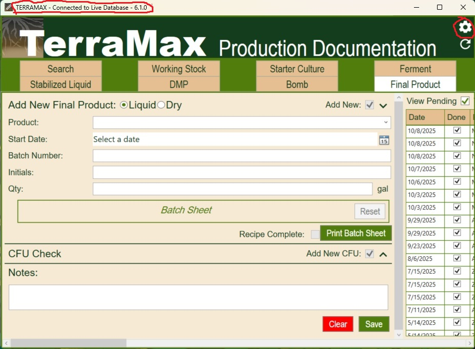
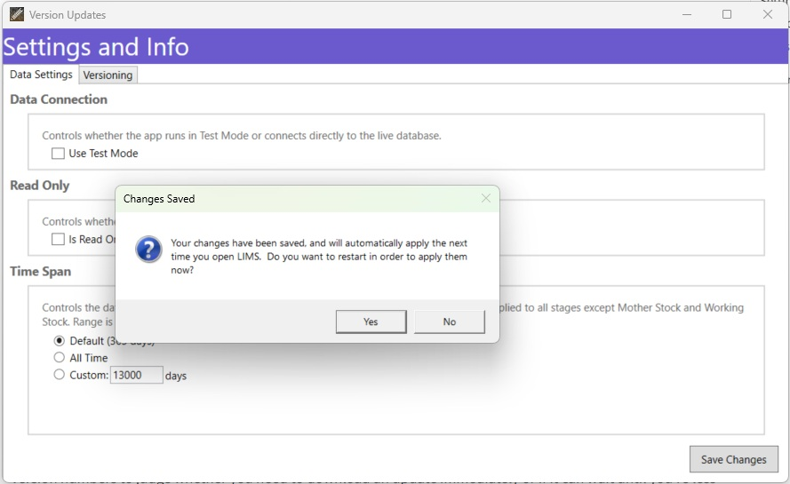
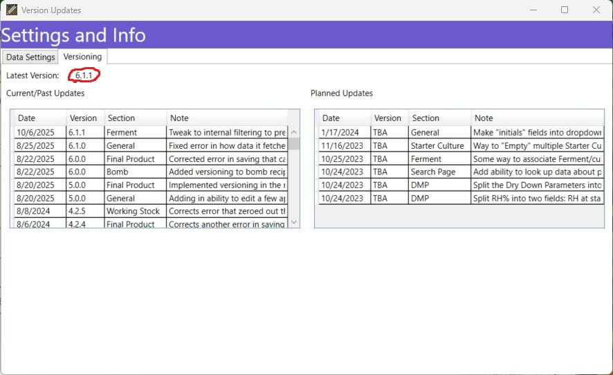

Settings and Versions
This document explains how to view LIMS versions and know if you need to update, and how to change application settings. Both Versions and Settings are found by clicking on the little gear icon in the top right corner of the program.

Your local LIMS application should tell you a few things right in the title bar:
- Whether it’s connected to the database or in Test Mode
- Whether it’s set to Read Only
- Version number
Settings
In the window that pops up when you click the gear icon, the first Data Settings tab allows you to change and save a few settings that affect how the LIMS application runs on your computer.
Data Connection - Use Test Mode
This is an on-or-off setting that determines whether the LIMS application connects to the database or not. The default normal funcitoning is for this to be unchecked. If you check it then it will run in Test Mode and use a small set of internally-generated test data instead of connecting to the database.
Why use Test Mode?
Test Mode offers a way to test the functionality of the application without making any changes to the real database. If you want to experiment with how the software works, this is a safe way to do that. It can also be useful for testing certain kinds of errors; if it seems likely that an issue is due to a connection issue, then using Test Mode is a way to check whether the error happens independent of the connection.
Read Only - Is Read Only
This is an on-or-off setting that determines whether the LIMS application is in Read Only mode or not. When I send out updates I will usually set this for you in advance according to what your needs are, but it’s also possible to change it yourself. If it’s checked, then LIMS will run in Read Only so that you can view real data from the database but you can’t edit it.
Time Span
This setting is a number that represents time in days. This will determine the Date Range of data that the application fetches from the database. Items like Mother Stock and Working Stock are all fetched no matter the date range, but for all other Stages LIMS will filter out everything that is older than the given number of days.
The default option is 1 year (365 days), and you’re given another selection option for “All Time”, and a third for a “Custom” time.
The purpose of this filtering is to improve the applicaiton’s performace. The more data it fetches, the longer it takes to load, and the more data is sitting in memory slowing down your computer. There are some situaitons where you might want to look up data about production from two years ago, but one year is plenty for most daily use.
Saving Changes
After you select the changes that you want to make to your settings, you need to click the Save Settings button at the bottom of the window. This will save the changes to the config.json file, so that they will be available the next time the application starts up and checks that file for details about how to run.
You will then be asked whether you want to restart in order to apply them now.

If you click
No, then LIMS will remain open and operting under the previous set of Settings, until you close it. Your changes will appear the next time you open LIMS.If you click
Yes, then LIMS will close, the loading animation will play, and it will re-open with the new Settings in place.
Versions
Whenever I release a LIMS update, the new version will have a new version number.
In the window that pops up when you click the gear icon, the second Versions tab contains more information about versioning.

Note: This versioning information comes from the database, and so is only available when connected. It will appear blank if you are in Test Mode.
At the top of the tab it tells you what the current latest release number is, so you can compare it with your own and know whether you’re up to date.
Below that are two tables; on the left is a list of Current/Past Updates. These default to sort of descending order by version number, with the most recent version on top. The table itself tells you what date a given update was released, what section/s the update affected, and then shows the beginning of a longer explanation of what the update did. If you double-click on a particular line in the table, then the full explanation will appear in the white space below so you can read about it.
In the table on the right is a list of Planned Updates, and works the same way as the Current/Past list. In theory it’s a way to track and communicate ideas about future updates, but has gotten a bit stale. All the items left in it are over a year old, and most were specifically requested by an employee who doesn’t work here any more and had somewhat divergent ideas about how LIMS should work. This was used more in the early days of LIMS development.
Version Numbers
The version numbers have three parts, which are meant to communicate the importance of the update.
The first digit on the left changing means a breaking change, something that fundamentally affects how the application interacts with the database. This usually involves some change to the backend database as well; either it was changed in a way that will cause older versions of LIMS to malfunction, or older versions of LIMS will add or edit data in a way that will undermine the newer data structure. Do not use a version with an outdated first digit unless you are using it in Read Only mode and never intend to make edits.
The second number is for big fixes or updates that are fairly serious and strongly recommended, but do not fundamentally change how the application interacts with the database. These are usually corrections of fairly serious errors that made LIMS unusable for certain tasks, or else additions of features that are significant but not essential. If your version is out of date in the second digit, you may encounter errors that have been fixed in later versions, but you shouldn’t be doing harm to anything but your own sanity.
The third digit is for smaller fixes and edits. These things are likely to be invisible except in specific, niche situations.
The difference between the second and the third level of importance is a bit of a judgement call on my part, but I try to use it to communicate the urgency of the update.
In general I recommend that you always update to the latest version, so that everyone is using the same version and I don’t have to trouble-shoot errors across a range of versions. But you can use this information about version numbers to judge whether you need to download an update immediately or if it can wait until you’re less busy.